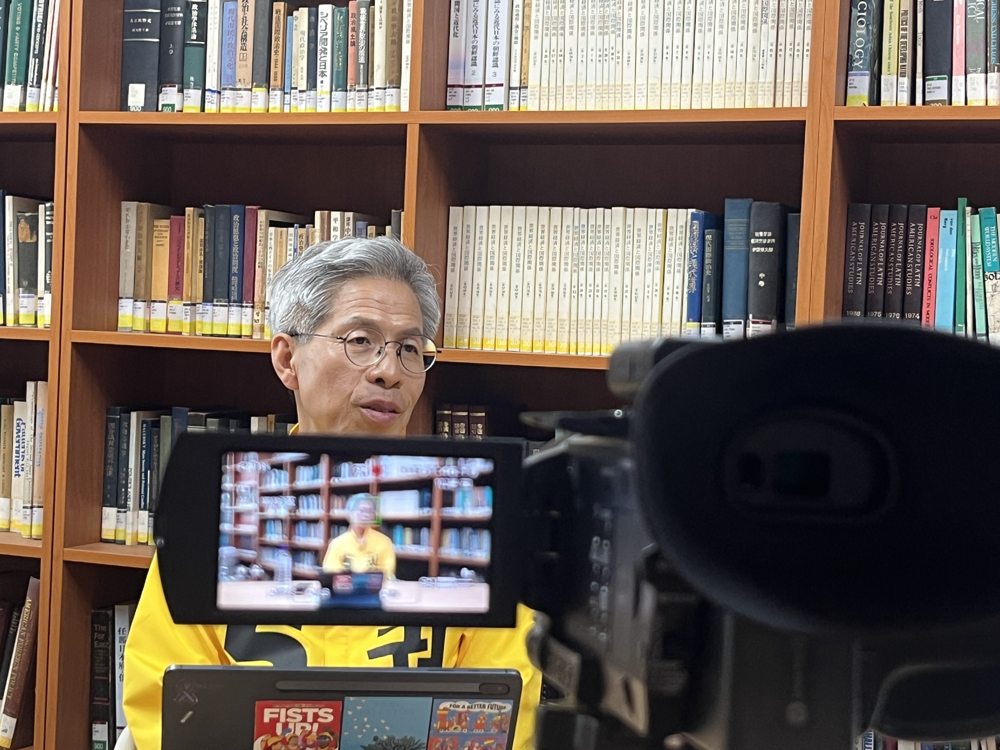
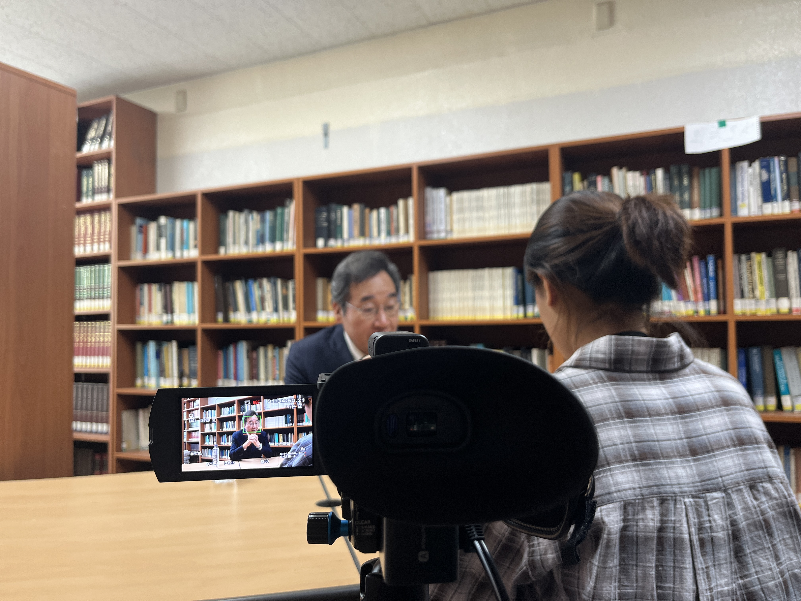

활동 개요
횃불기록회는 정치외교학과의 행사, 연구, 인터뷰, 칼럼을 기록하고 학생 잡지 「정의의 횃불」을 발간하는 학술 언론 동아리입니다. 사회적 이슈와 학문적 논의를 연결하는 글쓰기를 통해 학과의 목소리를 세상에 전하고 있습니다.
- 정치외교학과 학생 잡지 「정의의 횃불」 연 1회 발간
- 사회·정치 이슈 칼럼 및 인터뷰 기획
- '대학과 언론의 역할' 세미나 및 글쓰기 워크숍 운영


학과의 언론·기록을 담당하는 정치외교학과 대표 학술 동아리
횃불기록회는 정치외교학과의 행사, 연구, 인터뷰, 칼럼을 기록하고 학생 잡지 「정의의 횃불」을 발간하는 학술 언론 동아리입니다. 사회적 이슈와 학문적 논의를 연결하는 글쓰기를 통해 학과의 목소리를 세상에 전하고 있습니다.